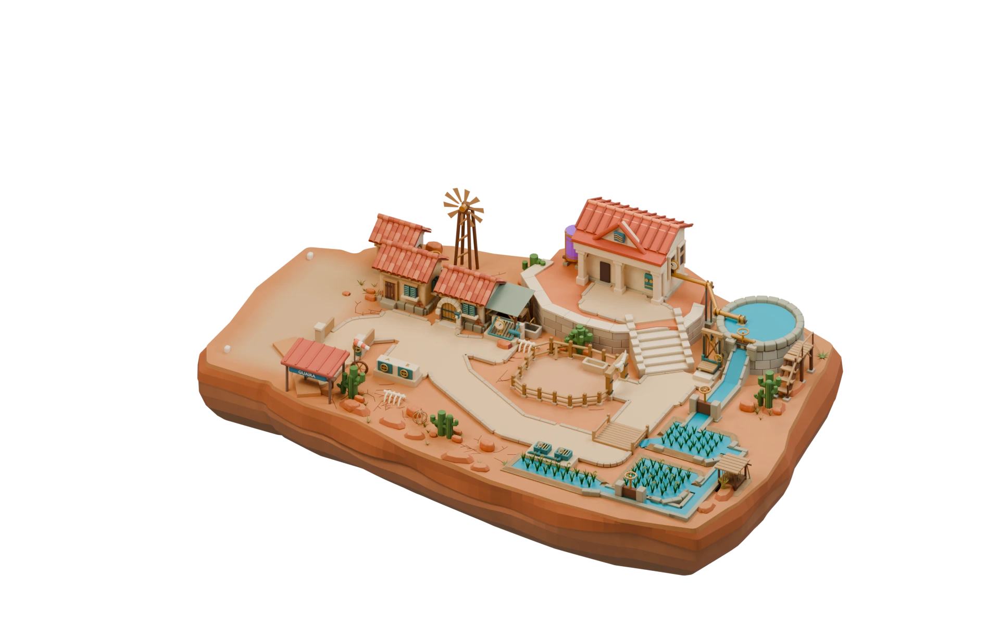
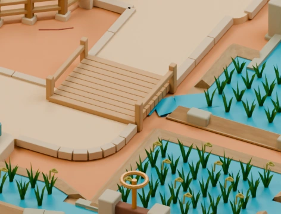
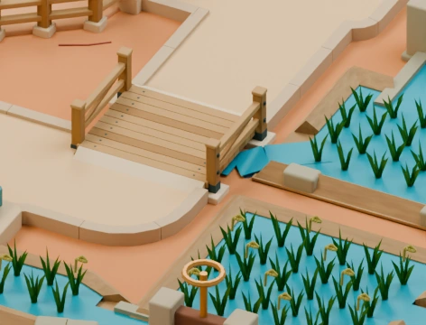
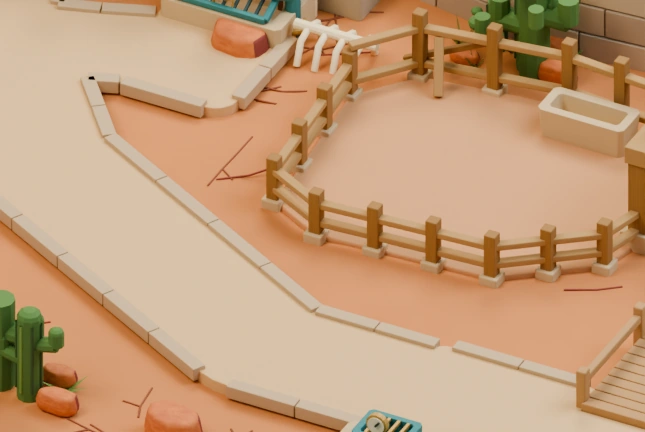
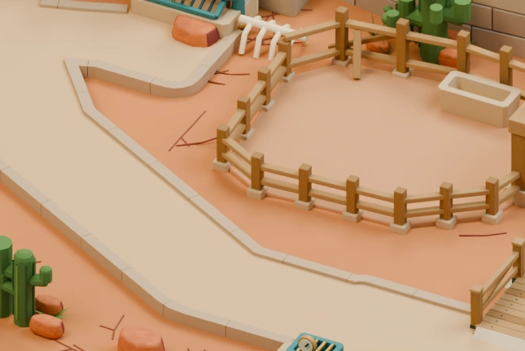
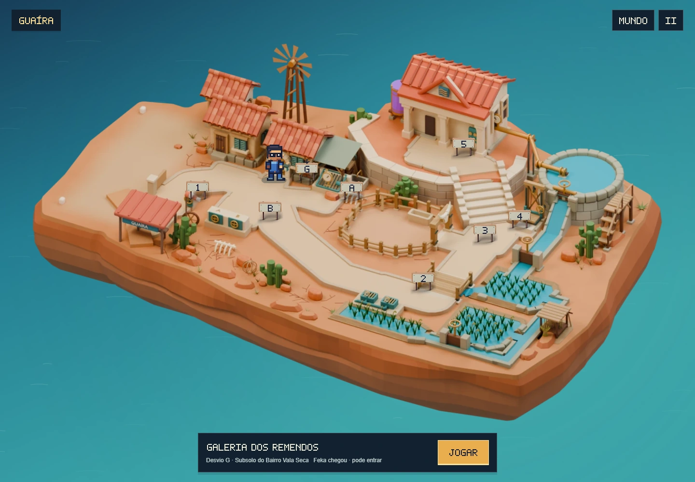
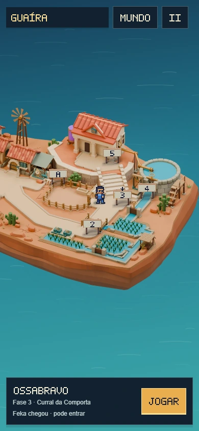

Caminhos bem ligados.
Entradas mais claras.
Os meios-fios agora acompanham as curvas com juntas regulares. A ponte ganhou apoios, vigas, guarda-corpos e transições suaves. As placas encontram espaço perto da entrada, sem cobrir Feka ou outras placas.

Curvas com juntas ajustadas
58 peças acompanham seis trechos de meio-fio. Os encontros seguem o contorno do caminho e deixam apenas juntas regulares de 3 mm no modelo.
Ponte ligada às margens
Quatro apoios de pedra recebem as vigas e os postes. O tablado tem fixações, os guarda-corpos têm travamento e as rampas acompanham o percurso de Feka.
Placas perto das fases
O mapa reserva o espaço do personagem antes de posicionar as placas. A entrada B deixa de ser empurrada para o outro lado da praça quando Feka chega à galeria.
Onde fica cada fase
Selecione uma fase para localizar sua chegada e sua referência no modelo. O capítulo tem cinco etapas principais, duas opções para a primeira etapa e dois desvios opcionais. A numeração abaixo parte da Travessia; escolher o Pátio ocupa a mesma etapa 1.
Curral da Comporta
O portão com chifres abre para o curral seco.
Etapa 3 · Ossabravo
Os encaixes de perto
Ampliações renderizadas diretamente das fontes do Blender, com a mesma câmera e resolução. A ponte mantém a passagem da água sob as vigas.




Chegar, entrar e voltar
Feka percorre a ponte e os caminhos, entra nas oito cenas e retorna à entrada correspondente. As placas usam a mesma interface nativa; o espaço do personagem e o dos outros botões são considerados juntos durante o posicionamento.


Modelo organizado por fase
As oito coleções e os marcadores de chegada continuam identificando as fases. A nova geometria foi conferida quanto a apoios, passagem de Feka e folga para a água sob a ponte. As peças substituídas ficam preservadas e ocultas na fonte editável.
O registro da revisão documenta os ajustes e os testes. O relatório reúne integridade das malhas, apoios, visibilidade, passagem do avião e entrada e retorno das oito cenas.